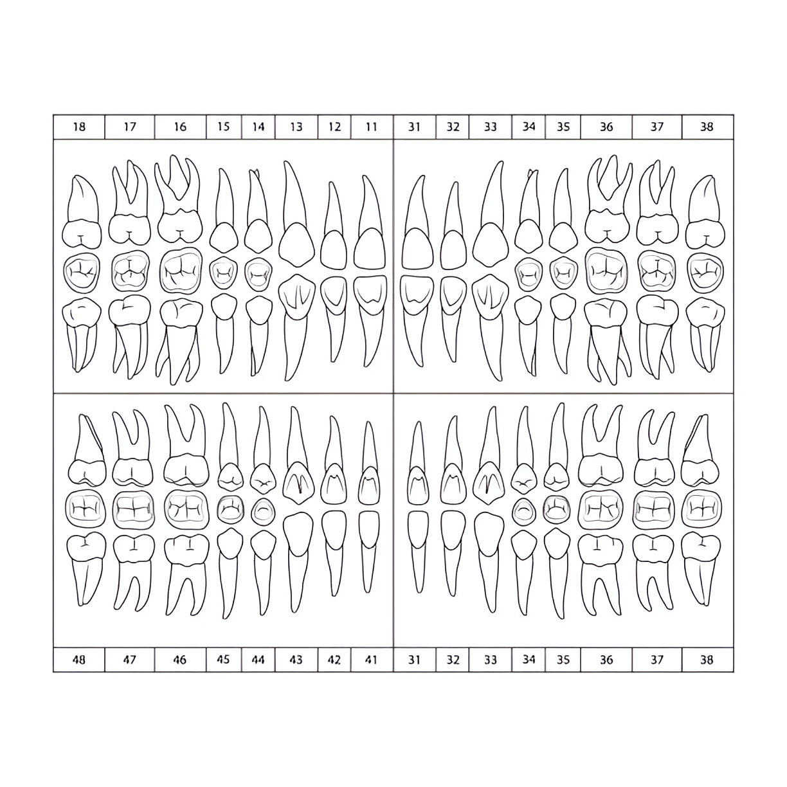

How to Use:
- Select a tooth from the grid below
- Click points around the tooth's black outline to create a polygon
- Double-click or press Enter to complete the polygon
- Right-click to undo the last point
- Repeat for all 32 teeth
- Generate HTML when finished
Tips: Zoom in for precision, trace clockwise, start from the top of the tooth
100%
Select a tooth to start mapping
Progress: 0/32 teeth completed
Current points: 0
Click on a tooth number to begin tracing its outline

Generated HTML Image Map:
\n\n';
html += '';
document.getElementById('htmlOutput').value = html;
}
function copyToClipboard() {
const output = document.getElementById('htmlOutput');
if (output.value.trim() === '') {
alert('Generate HTML first!');
return;
}
output.select();
document.execCommand('copy');
alert('HTML copied to clipboard!');
}
function downloadHTML() {
const output = document.getElementById('htmlOutput');
if (output.value.trim() === '') {
alert('Generate HTML first!');
return;
}
const blob = new Blob([output.value], { type: 'text/html' });
const url = URL.createObjectURL(blob);
const a = document.createElement('a');
a.href = url;
a.download = 'dental-chart-map.html';
document.body.appendChild(a);
a.click();
document.body.removeChild(a);
URL.revokeObjectURL(url);
}